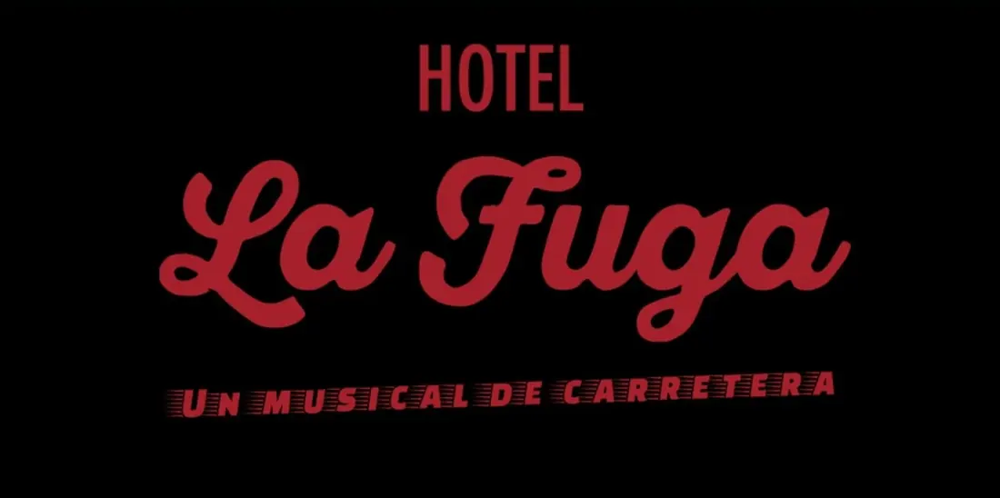
Light · Logic · Create
i² by Luciia
Acerca de
Me gusta entender cómo funcionan las cosas, descubrir otras nuevas y convertir ideas en algo real.
La iluminación y la informática son dos formas diferentes de hacer eso.
En la cabina, me gusta dar vida a un escenario y sentir que lo que hago forma parte de que ese momento suceda.
En informática, disfruto de ese mismo proceso desde otro lugar: investigar, resolver problemas, aprender cómo funcionan las cosas y construir soluciones.
No necesito saber cómo hacer algo para querer intentarlo.
Si una idea me interesa, busco, pregunto, pruebo y aprendo hasta encontrar la manera de hacerla funcionar.
Y cuando funciona, normalmente ya estoy pensando en qué más podría hacer con ello.
Me gusta crear cosas que tengan un propósito, que funcionen y que tengan algo de mí.
Y también me importa cómo se trabaja en equipo: quiero que las personas que trabajan conmigo estén a gusto, sepan que pueden contar conmigo y encuentren en mí a alguien que aporta buenas ideas y hace bien su trabajo.
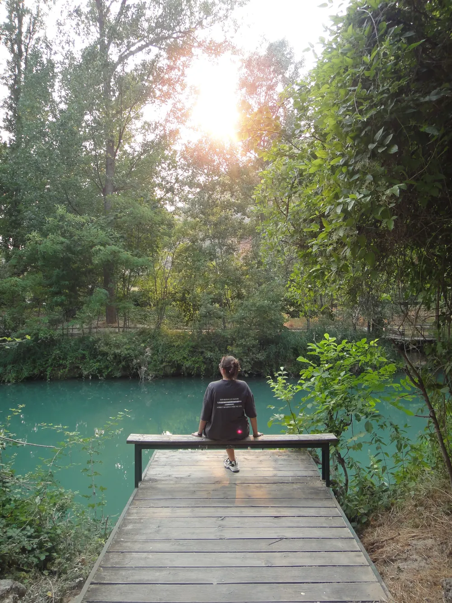
Light
Para mí, la iluminación es parte de la historia: ayuda a los actores a entrar en personaje y al público a sumergirse en ella.
En cabina preparo, observo y me adapto.
Conozco la obra, sigo lo que ocurre en escena y, si algo cambia, encuentro la manera de que el espectáculo continúe sin que nadie lo perciba.
Me gusta saber que lo que hago importa, aunque el público nunca llegue a verlo.
Una más. :)
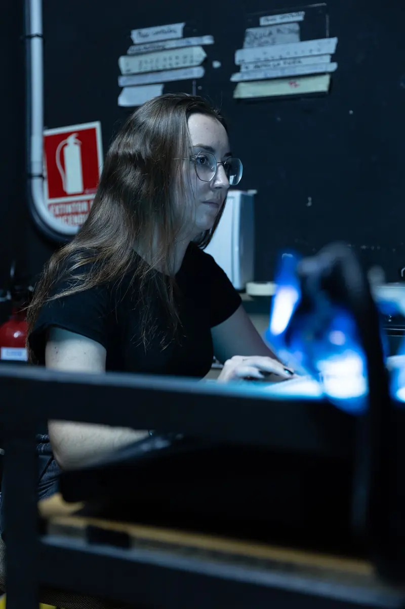
Preparar
Observar
Adaptar
Actuar
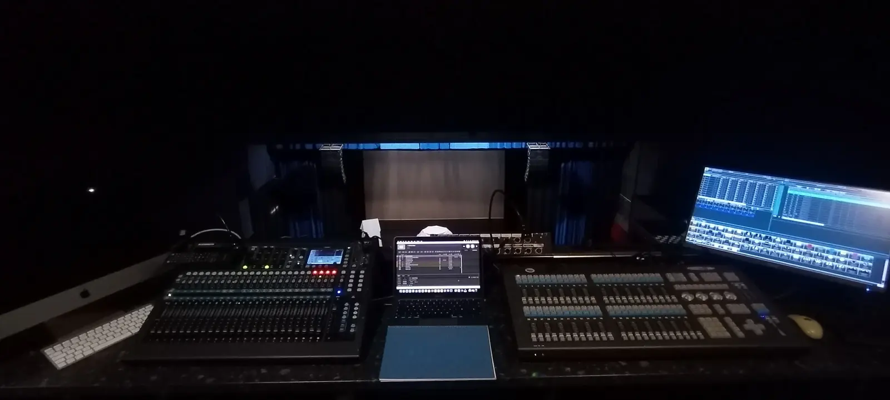
¿Quieres ver alguno de mis trabajos?
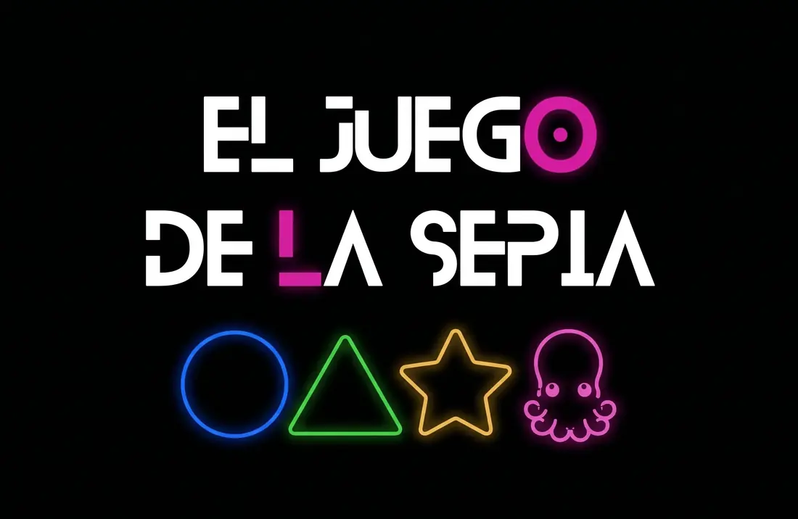
El Juego de la Sepia
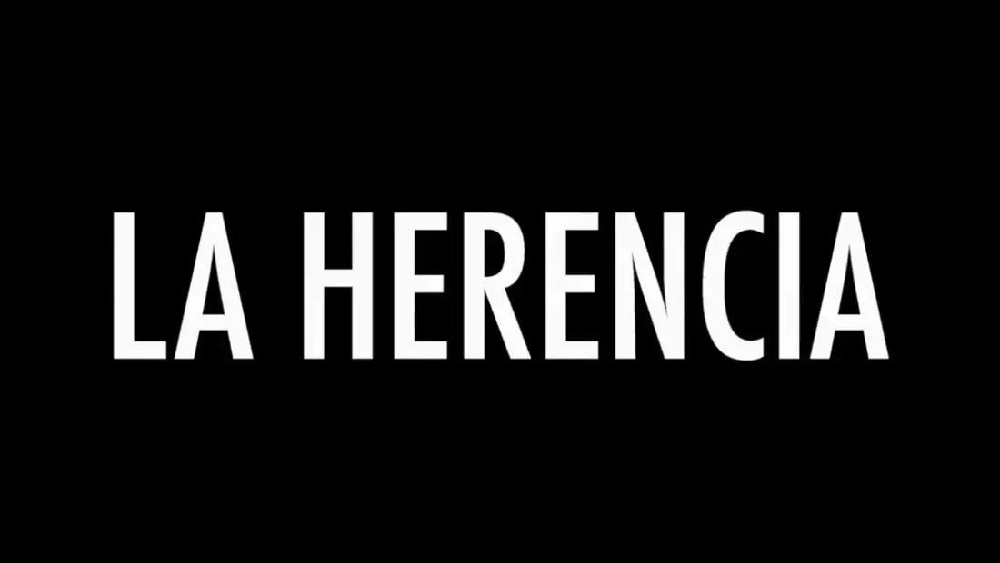
La Herencia
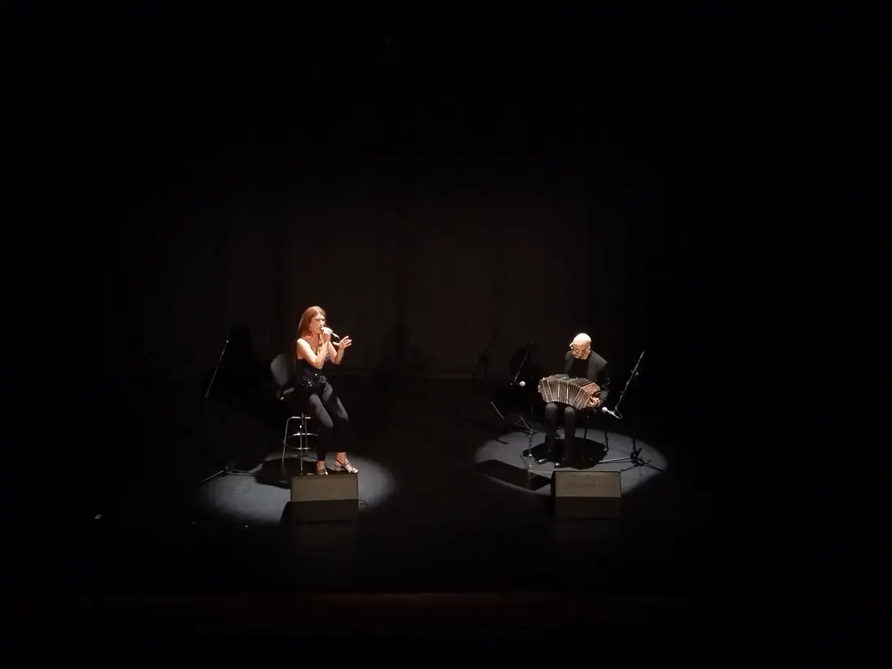
Otros
Herramientas
Control
- grandMA2
- ChamSys
- LightShark
Programación
- Patch DMX
- Direccionamiento DMX
- Universos DMX
Multimedia
- QLab
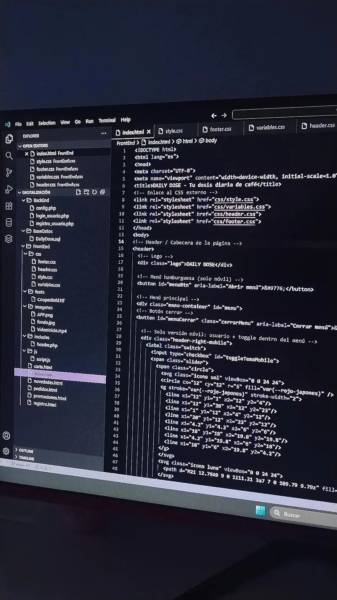
Logic
La informática es otra forma de crear para mí.
Me gusta entender cómo funcionan las cosas, pensar cómo deberían encajar y convertir una idea en algo que realmente funcione.
Disfruto especialmente trabajando con datos y construyendo soluciones.
Cuando algo falla, investigo, encuentro el problema y busco la forma de resolverlo.
Uno de mis proyectos empezó como una pequeña idea para hacer algo visual para mi grupo y acabó convirtiéndose en el caso práctico de mi TFC.
Diseñé su base de datos y desarrollé la web, incluyendo la gestión de usuarios y roles.
Lo que empezó como una idea terminó siendo un proyecto real.
Y quizá eso sea lo que más me gusta de la informática: ver cómo algo que primero solo existe en mi cabeza acaba funcionando delante de mí.
Pensar
Construir
Depurar
Resolver
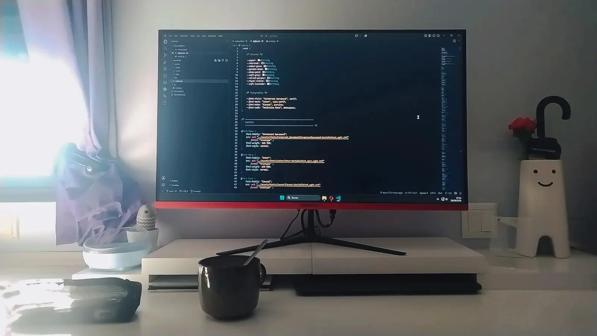
¿Quieres ver alguno de mis trabajos?
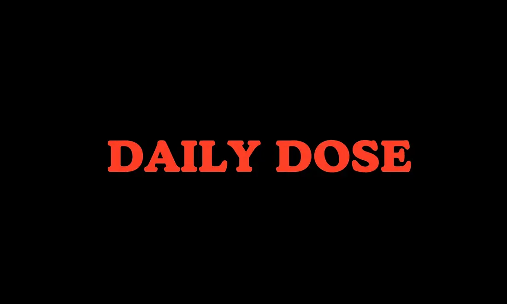
Daily Dose

i2lab · En desarrollo
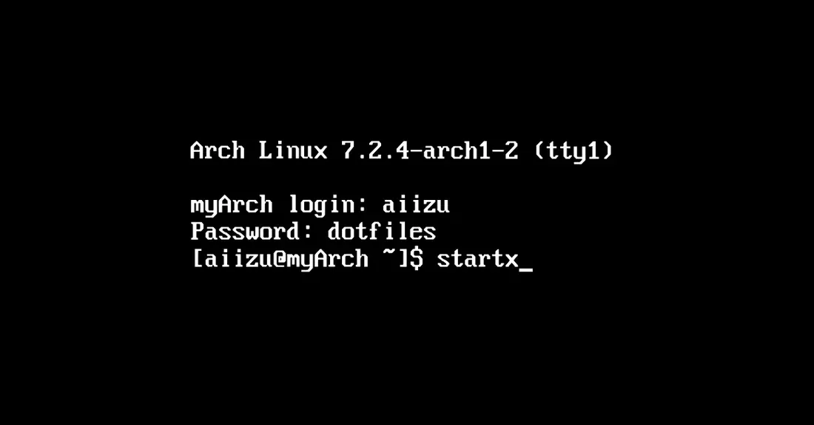
dotfiles

Amber · En desarrollo
Herramientas
Desarrollo
- HTML
- CSS
- JavaScript
- PHP
- Python
Bases de datos
- MySQL
- SQL
Sistemas
- Linux
- Windows
- Docker
Control de versiones
- Git
- GitHub
Create
No todas mis ideas empiezan con un objetivo concreto.
Algunas simplemente me parecen interesantes, me despiertan curiosidad o me hacen pensar:
“¿sería capaz de hacer esto?”
Crear es una forma de aprender para mí.
Investigo, pruebo, me equivoco, descubro cosas nuevas y voy viendo hasta dónde puedo llevar una idea.
Aquí es donde mezclo todo lo que me gusta: tecnología, creatividad, fotografía, ideas y experimentación.
No siempre sé dónde va a acabar un proyecto cuando empiezo.
Y creo que esa es precisamente la parte que más disfruto.
Crear me hace bien.
¿Quieres ver alguno de mis trabajos?

i2lumen · En desarrollo

Portfolio · En desarrollo